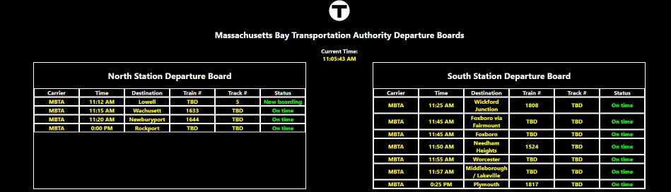
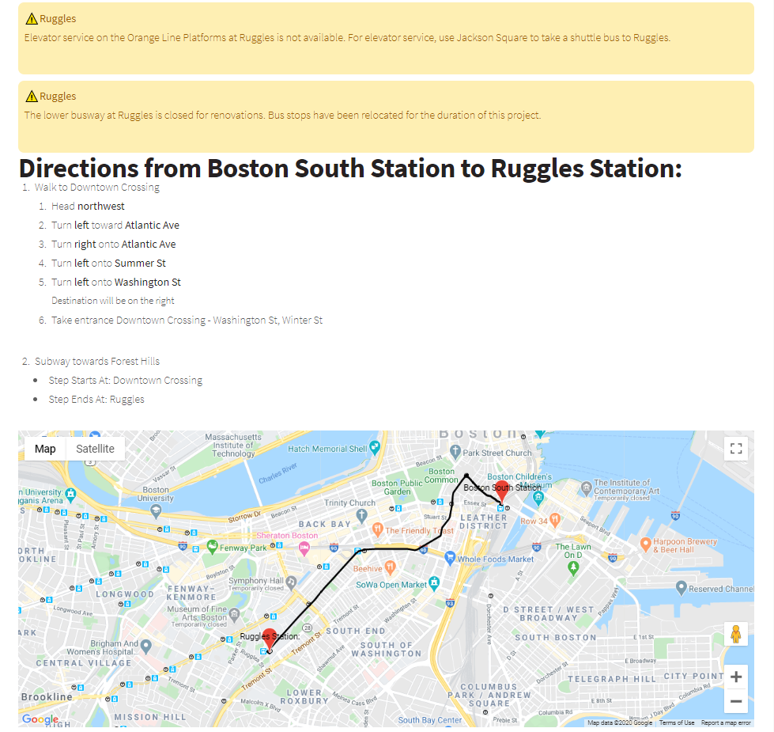

-
Pokémon Universe Network

My first major project, Pokémon Universe Network is an online multiplayer Pokémon game designed to replicate the gameplay of Pokémon Ruby and Sapphire versions, with open-world multiplayer where players coexist in the Hoenn region, with the goal of becoming the champion of the region. Features unique to Pokémon Universe Network include the addition of Pokémon that were added to the series after Pokémon Ruby and Sapphire versions, Pokémon walking in the overworld, and the ability for players to interact with one another everywhere, without requiring them to enter specifc areas first.
-
MBTA: Web Departure Boards
This project is designed to fully replicate the departure boards at North Station and South Station in Boston, prediciting upcoming departures at either of the two stations and providing information on departure time, track number, trip ID, and final destination. This web app was designed with React.JS using TypeScript, and uses the MBTA v3 API for trip predictions.
-
Accessible Trip Guides
This project is designed go give users the ability to directions between two MBTA stations in a handicapped-acciessible manner with a minimal number of required transfers. Currently, it utilizes Google Maps and pre-defined alerts to generate directions for users while warning the user of any accessibility barriers (such as out-of-service elevators, or lack of high-level boarding platforms) that the station may have. In the future, I plan to integrate crowdsourced information (verified for quality by website admins) that will give users the ability to update the site with more alerts in the future.